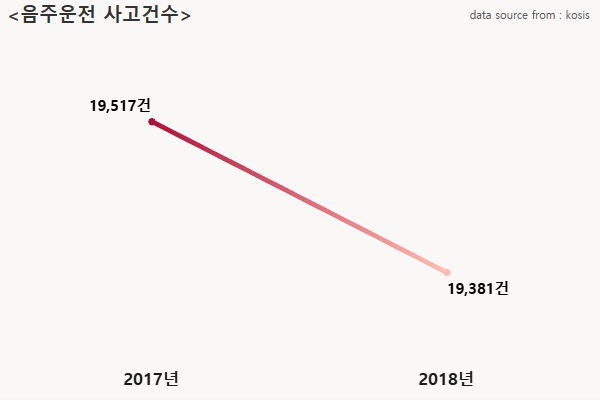

여전히 10만 명의 음주 운전자가 도로 달린다

통계청에 따르면 지난 2014년부터 지난해까지 총 음주운전 적발 건수는 108만 9,317건에 이른다. 2014년 21만 9,392건을 기록한 이후 감소추세를 보이지만, 지난해에도 여전히 14만 건에 이르는 음주운전이 적발됐다. 5년간 7만 8,877건이 줄었음에도 여전히 10만 명이 넘는 음주 운전자가 음주운전을 저지르는 것이다.
'윤창호 사건' 후 1년,
만취한 대한민국 도로
데이터로 살펴보는 대한민국의 잘못된 음주문화
'제1 윤창호법'과 '제2 윤창호법'이 연이어 제정됐지만, 대한민국은 여전히 음주운전으로 병들고 있다.
얼마나 많은 이가 음주운전을 하는 것일까?
왜 그들은 음주운전을 할까?
대한민국에 음주운전으로부터 안전한 곳은 없는 것일까?
한국의 음주운전 백태를 들여다봤다.
통계청에 따르면 지난 2014년부터 지난해까지 총 음주운전 적발 건수는 108만 9,317건에 이른다. 2014년 21만 9,392건을 기록한 이후 감소추세를 보이지만, 지난해에도 여전히 14만 건에 이르는 음주운전이 적발됐다. 5년간 7만 8,877건이 줄었음에도 여전히 10만 명이 넘는 음주 운전자가 음주운전을 저지르는 것이다.
2018년에는 지난 4월에만 1만 3,767건의 음주운전이 발생했고 3월부터 5월까지 3개월 만에 4만 405건의 음주운전이 발생했다.
지난 2년간 음주운전으로 인한 사고 건수는 3만 8,898건에 이른다. 게다가 음주운전으로 인한 사고에 의한 사상자는 1건에 1명에 그치는 것도 아니다. 지난 2017년 3만 3,364명의 부상자가 발생했고 439명의 사망자가 발생했다. 2018년에도 3만 2,952명의 부상자와 346명의 사망자가 발생했다.
경찰청에 따르면 지난 5년간 음주운전 가해자의 연령 조사 결과 31~45세의 연령대가 가장 가해자가 많은 것으로 드러났다. 2014년 10만 3,444명, 2015년 9만 6,260명, 2016년 9만 420명, 2017년 7만 7,136명, 2018년 5만 8,717명으로 전체 음주운전 가해자의 44%에 달했다.
그러나 음주운전은 이들만이 저지르는 것도 아니었다. 19~30세의 청년층 역시 전체 가해자 중 20%를 차지했고 매년 4만 명가량의 가해자가 청년층에서 발생했다. 그렇다면 이들은 왜 음주운전을 하는 것일까
통계청에 따르면 지난 5년간의 음주운전 범행동기 조사 결과 '부주의'로 인한 음주운전이 가장 많은 것으로 나타났다. 전체 범행동기의 40%가 부주의에 의한 음주운전인 것으로 조사 됐으며 우발적인 음주운전은 예상보다 낮은 9%에 그쳤다. 그러나 지난 2014년과 2015년 8만 건이 넘었던 부주의에 의한 음주운전이 지난해 5만 9,608명까지 줄어들며 음주운전에 대한 인식 변화가 이루어지고 있음을 알 수 있었다.
음주운전을 누가, 왜 하는 만큼 중요한 것은 바로 '내가', '우리 가족'이 '음주운전으로부터 안전할까?' 일 것이다.
통계청은 매년 음주운전 경험자에 대해 조사하고 있고 이를 통해 음주운전이 특히나 많은 지역과 안전한 지역을 알 수 있다.
최근 조사에 따르면 음주운전 경험자가 가장 많은 지역은 경기도였다. 2014년부터 5년간의 음주운전 경험을 조사한 결과 경기도는 전체 음주운전 경험자의 19%를 차지했다. 통계청에 따르면 경기도는 지난 5년간 평균 2만 3,856건의 음주운전 경험이 발생했다. 이는 전국에서 두 번째로 음주운전 경험이 많은 경상북도의 평균 음주운전 경험 발생 수인 1만 2,394건에 비해 2배가량 많은 수다.
그러나 인구 대비 음주운전 경험자 비율 기준으로는 전국에서 가장 음주운전에 취약한 지역은 충청남도였다. 최근 5년간 전국단위 음주운전 경험 비율 상위 5개 지역을 구분 지은 결과 ▲충청남도 ▲전라남도 ▲광주광역시 ▲경상북도 ▲세종특별자치시가 선정됐다. 그리고 5개 도시의 음주운전 경험자 비율에서 충청남도가 23%를 차지하며 가장 많은 음주운전 경험자가 존재하는 지역인 것으로 나타났다.
그렇다면 음주운전에서 안전한 지역은 어디일까? 통계청에 따르면 인구 대비 음주운전 경험자 비율 조사 결과 ▲서울특별시 ▲인천광역시 ▲부산광역시 ▲대전광역시가 ▲울산광역시가 전국 음주운전 경험자 비율 하위 5개 도시에 해당했다. 특히 서울의 경우 지난 2014년 인구의 8.1%만이 음주운전 경험이 있는 것으로 조사돼 비교적 음주운전에서 안전한 지역인 것으로 나타났다.
실제 통계에 따르면 매년 음주운전 발생률은 줄고 있다. 음주운전 범행동기 조사 결과 역시 음주운전에 대한 인식이 변화하고 있음을 알려주고 있다.
그러나 여전히 한국 사회와 시민들은 음주운전의 위험에 노출되어 있고 두려움에 떨고 있다. 여전히 음주운전에 대한 조치가 미흡하다는 의견이 나오고 있고, 여전히 음주운전으로 억울하게 세상을 떠나거나 사랑하는 이를 잃는 이들이 존재하고 있다.
대만은 지난 2월부터 음주운전 사망사고의 경구 '고의적 살인죄' 적용을 검토하고 있고, 음주운전 전적이 있는 차량의 번호판을 형광색으로 바꿔 차별화를 두기로 지침을 정했다. 중국은 음주운전에 대한 형량 제한이 없다. 사형까지 집행될 수 있다. 미국 역시 최고 무기 징역까지 선고될 정도로 음주운전을 엄격하게 다루고 있다.
지난해 11월 22살의 젊은 청년이 희생되고 들끓었던 대한민국은 젊은 희생을 기리기 위해 윤창호법을 제정했다. 그러나 윤창호법 역시 미약한 처벌 수준과 기준으로 인해 부족하다는 지적이 따라다니고 있다. 대한민국이 변화하고 있는 것은 사실이지만, 음주운전을 근절하기 위해 더 큰 변화, 더 큰 생각의 전환이 필요한 시점이다.